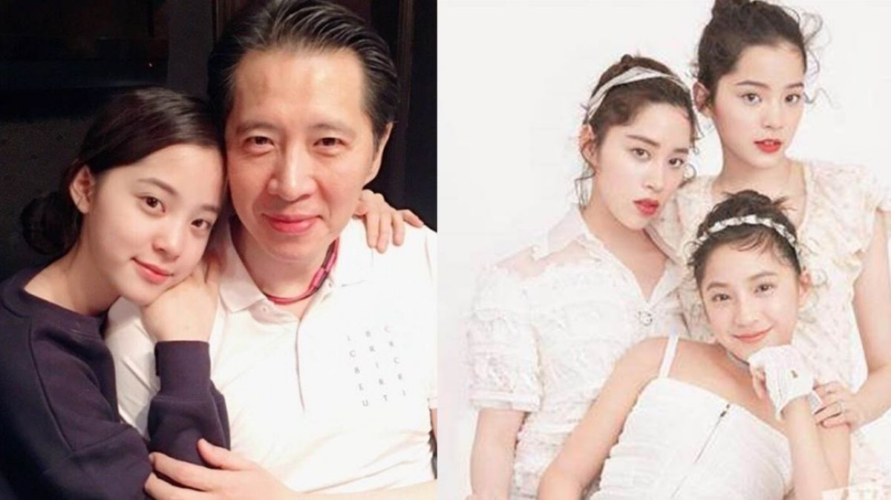

女星歐陽娜娜因從小看爸媽和姊姊闖蕩演藝圈，15歲考上寇蒂斯音樂學院，但之後卻爆出她因通告量大、選擇在家自學，違反寇蒂斯的校規休學。據了解她光是上半年就賺進了3億，不過她確定在今年9月到美國波士頓伯克利音樂學院就讀，為此推掉7部戲約，但傳出歐陽龍比較寵愛娜娜，原因首度曝光大家通通跪了！

根據《鏡週刊》報導，歐陽娜娜才剛過了18歲生日，光是這上半年就默默賺了至少3億元安家費，歐陽娜娜這3年在中國大陸累積了相當高的人氣，每年也為歐陽家賺進上億財產，由於她決定前往伯克利音樂學院學習編曲等課程，至少有3年的時間要專心求學，她也在記者會上說這次返校「要念到開心為止」。據了解她為此推掉了起碼7部電影和戲劇，有消息指出她的收入還要拿來供家人開銷，爸爸歐陽龍雖是議員但月薪不到20萬，還得扣掉平常服務選民的費用剩下不多，而媽媽傅娟只是零星接通告，姊姊歐陽妮妮戲約不多、妹妹歐陽娣娣也要赴美念書，如今即將重返校園，歐陽娜娜也趁著開學前努力工作。